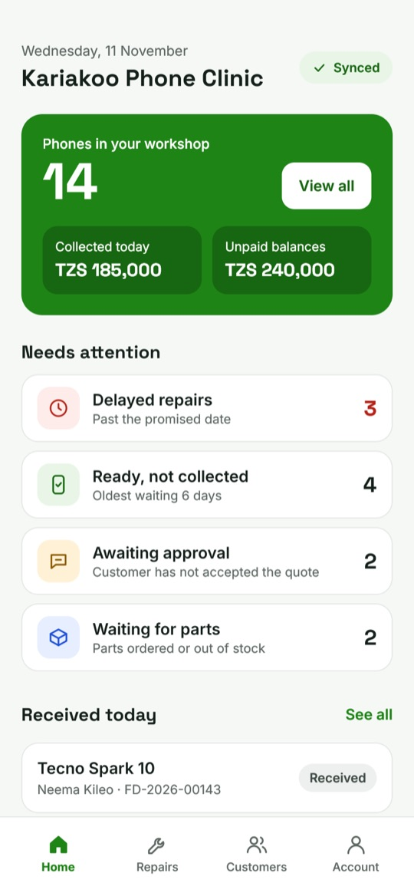
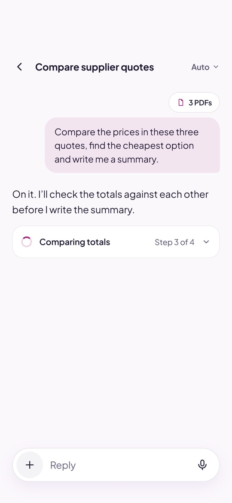

Morningstar documentation
Morningstar is a Rust framework for building Android and iOS apps from one codebase. You describe each screen as a function of your app's state; Morningstar lays it out and draws it itself on the GPU. There is no web view, and none of the platform's own widgets.
use morningstar::ui::prelude::*;
/// The application's state.
#[derive(Default)]
pub struct Counter {
pub count: u32,
}
/// What can happen to it.
#[derive(Clone)]
pub enum Message {
Tapped,
}
impl Application for Counter {
type Message = Message;
// What the screen looks like, as a function of the state.
fn view(&self) -> Element<Message> {
SafeArea::new(
col![
text(format!("Tapped {} times", self.count)).title(),
Button::new("Tap me").on_press(Message::Tapped).fill_width(),
]
.gap(16.0)
.padding(24.0)
.fill_width(),
)
.into()
}
// The only place the state changes.
fn update(&mut self, message: Message) {
match message {
Message::Tapped => self.count += 1,
}
}
}That is a whole application. view says what the screen looks like for the current state, a tap delivers a Message, and update is the only place the state changes. One more line makes the crate an app the phone can start:
// The one line that makes the crate an app: the hosts call into it.
morningstar::app!(Ui::new(Counter::default()));Start here
New to the framework? These four pages take you from an empty folder to an app running on your phone.
view, update, and how work that takes time comes back as a message.Widget galleryEvery widget with its methods, read from the source, and a sample that compiles.What apps built with it look like
Every picture in these pages is one frame through the real renderer, produced with no phone by the app's own screenshot program. Four of the example apps follow a design, and each is held to its design's pictures by tests.




The examples say what each app shows and how to run it.
Where the project stands. Android works: apps have been installed and used on one phone. The iOS host is written but has never been compiled, and several services answer "unsupported" there. Platform status lists what has been seen on a device and what has not.
Supported platforms
| Platform | State |
|---|---|
| Android | Builds for API 24 (Android 7.0) and later. Run on one phone so far: a Galaxy A27 on Android 16 |
| iOS | Shared code type-checks for iOS; the Swift host has never been built or run |
| Development machine | A Mac: the tests draw on its GPU, and the live preview opens a window on it |
| Rust | Stable, 1.87 or newer |
Getting help
The repository is the reference. AGENTS.md at its root holds the rules every change follows, each subsystem's decision is recorded under decision records, and troubleshooting collects the problems that have actually come up.